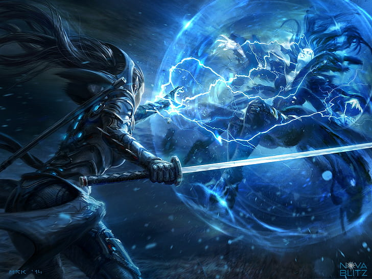

The way we plan to do skills in unlike any other game. Instead of having set skills that are given to you at set times we want to give you your own unique skills. Instead of gathering skills the traditional way through a skill tree or something similar we plan on having an AI assign you skills based on your current progression. Something we thought would be interesting. If you play a mage you will first be offered one of the basic level skills, things that will most likely be on the less unique side of things to get you started.
These skills will be one of the major elements for mage based, one of many styles of combat for the melee or ranged builds, and finally we hope to incorporate artisan based skills for those of us who prefer to play casually. There is of course MANY possibilities, such as a Spell Sword type class, a sort of enchanting artisan that weilds high levels of magic, or a ranger who specializes in tinkering.